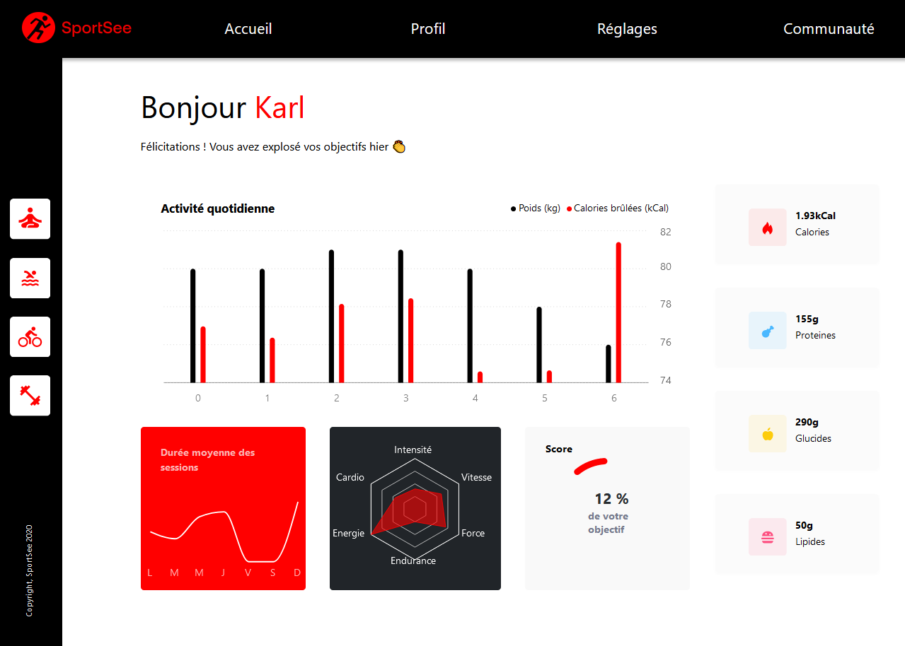

SportSee 🇬🇧
personnel Dashboard

ISSUE Create an analytical dashboard of sports performance and physiological indicators.
NEED Display user data as a dynamic graph.
Libraries
REACT
RECHART
Install
Recommended editor
Prerequisites
- Git to clone repos
- nodeJS(version 14.20.1) to execute commands
- npm (version 6.14.17) to launch the application (front-end)
- Yarn(version 1.22.18) to launch the API (back-end)
Dependencies
- Recharts (version 2.1.15)
- react-router-dom (version 6.4.2)
- Prop-types (version 15.8.1)
Step 1: Launching the back-end (services)
- Clone the project repo:
gh repo clone AndyRama/AndyRamaroson_12_25112021 - Go to this folder:
cd sportsee/Server - Install its dependencies:
yarn install - Run it on port 3000 (default):
yarn run dev
Step 2: Launching the front-end (client)
- Go to this folder:
cd sportsee/Client - Install its dependencies:
npm install - Run it on port 3001:
npm run start
Web Render View URL: http://localhost:3001/user/id
SportSee API provides data for id 12 and 18 users
SportSee 🇫🇷
Bibliothèques
REACT
RECHART
Installation
Editeur recommandé
Prérequis
- Git pour cloner les repos.
- nodeJS (version 14.20.1) pour exécuter les commandes.
- npm (version 6.14.17) pour lancer l'application (front-end).
- Yarn(version 1.22.18) pour lancer l'API (back-end).
Dépendances
- Recharts (version 2.1.15)
- react-router-dom (version 6.4.2)
- Prop-types (version 15.8.1)
- Axios
Etape 1 : Lancement du back-end (services)
- Cloner le repo du projet :
gh repo clone AndyRama/AndyRamaroson_12_25112021 - Aller dans ce dossier :
cd sportsee/Server - Installer ses dépendances :
yarn install - Le lancer sur le port 3000 (par défaut) :
yarn run dev
Etape 2 : Lancement du front-end (client)
- Aller dans ce dossier :
cd sportsee/Client - Installer ses dépendances :
npm install - Le lancer sur le port 3001 :
npm run start
URL de visualisation du rendu web : http://localhost:3001/user/id
l'API de SportSee fournit des données pour les utilisateurs d'id 12 et 18